Chapter 5 Logistic Regression
n this chapter you’ll learn about using logistic regression, a generalized linear model (GLM), to predict a binary outcome and classify observations.
5.1 Fitting a line to a binary response
When our response variable is binary, a regression model has several limitations. Among the more obvious—and logically incongruous—is that the regression line extends infinitely in either direction. This means that even though our response variable \(y\) only takes on the values 0 and 1, our fitted values \(\hat{y}\) can range anywhere from \(-\infty\) to \(\infty\). This doesn’t make sense.
To see this in action, we’ll fit a linear regression model to data about 55 students who applied to medical school. We want to understand how their undergraduate GPA relates to the probability they will be accepted by a particular school (Acceptance).
Exercise
library(Stat2Data)
data(MedGPA)The medical school acceptance data is loaded in your workspace as MedGPA.
- Create a scatterplot called
data_spaceforAcceptanceas a function ofGPA. Usegeom_jitter()to apply a small amount of jitter to the points in the y-direction by settingwidth = 0andheight = 0.05.
# scatterplot with jitter
data_space <- ggplot(data = MedGPA, aes(x = GPA, y = Acceptance)) +
geom_jitter(width = 0, height = 0.05, alpha = 0.5) +
theme_bw()
data_space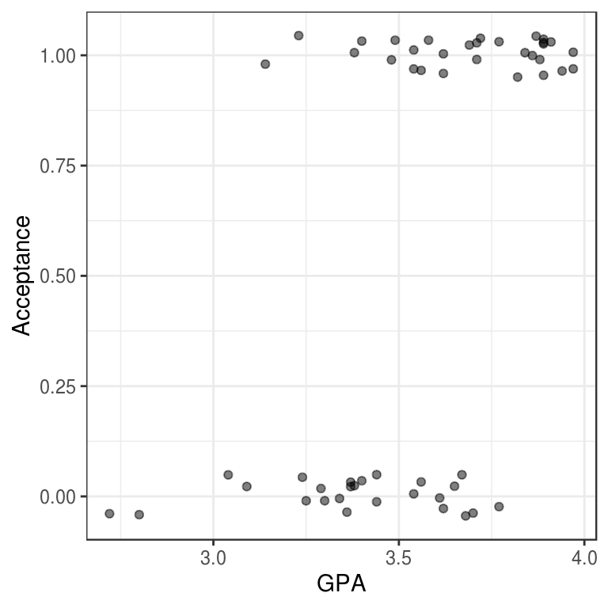
- Use
geom_smooth()to add the simple linear regression line todata_space.
# linear regression line
data_space +
geom_smooth(method = "lm", se = FALSE)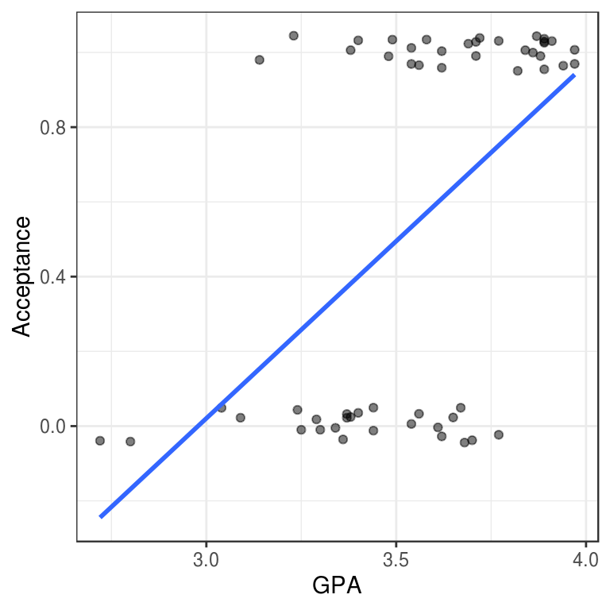
5.2 Fitting a line to a binary response (2)
In the previous exercise, we identified a major limitation to fitting a linear regression model when we have a binary response variable. However, it is not always inappropriate to do so. Note that our regression line only makes illogical predictions (i.e. \(\hat{y} < 0\) or \(\hat{y} > 1\)) for students with very high or very low GPAs. For GPAs closer to average, the predictions seem fine.
Moreover, the alternative logistic regression model—which we will fit next—is very similar to the linear regression model for observations near the average of the explanatory variable. It just so happens that the logistic curve is very straight near its middle. Thus, in these cases a linear regression model may still be acceptable, even for a binary response.
Exercise
- Use
filter()to find the subset of the observations whose GPAs are between 3.375 and 3.77, inclusive.
# filter
MedGPA_middle <- filter(MedGPA, GPA >= 3.375, GPA <= 3.77)
head(MedGPA_middle) Accept Acceptance Sex BCPM GPA VR PS WS BS MCAT Apps
1 D 0 F 3.59 3.62 11 9 9 9 38 5
2 A 1 F 3.74 3.69 12 11 7 10 40 5
3 A 1 F 3.53 3.38 9 11 4 11 35 11
4 A 1 M 3.59 3.72 10 9 7 10 36 5
5 A 1 F 3.74 3.71 8 10 6 11 35 5
6 A 1 F 3.35 3.49 11 8 4 8 31 9- Create a scatterplot called data_space for Acceptance as a function of GPA for only those observations. Use geom_jitter() to apply 0.05 jitter to the points in the \(y\)-direction and no jitter to the \(x\)-direction.
# scatterplot with jitter
data_space <- ggplot(MedGPA_middle, aes(x = GPA, y = Acceptance)) +
geom_jitter(width = 0, height = 0.05, alpha = 0.5) +
theme_bw()
data_space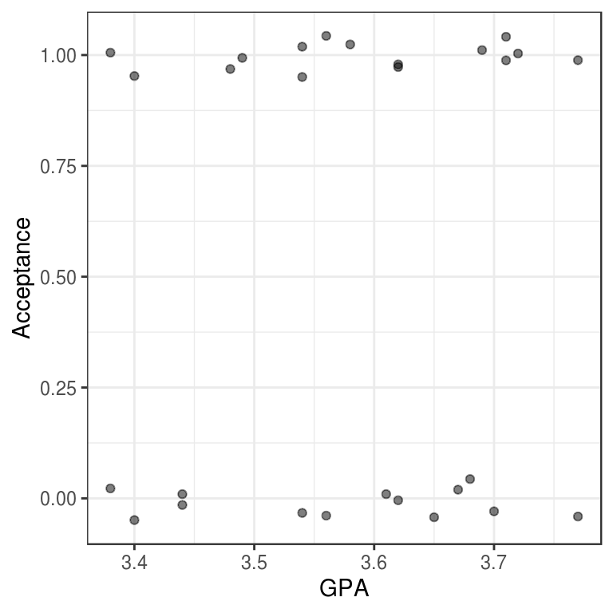
- Use geom_smooth() to add only the simple linear regression line to data_space.
# linear regression line
data_space +
geom_smooth(method = "lm", se = FALSE)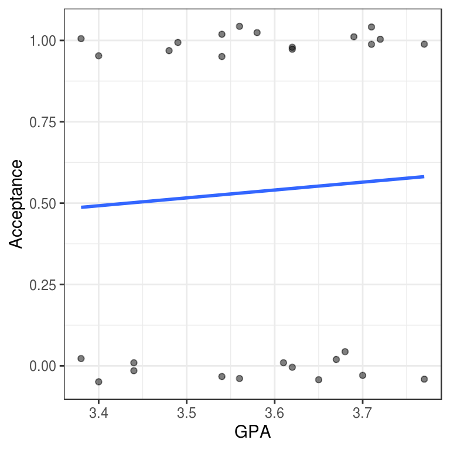
5.3 Fitting a model
Logistic regression is a special case of a broader class of generalized linear models, often known as GLMs. Specifying a logistic regression model is very similar to specify a regression model, with two important differences:
We use the
glm()function instead oflm()We specify the
familyargument and set it tobinomial. This tells the GLM function that we want to fit a logistic regression model to our binary response. The terminology stems from the assumption that our binary response follows a {binomial distribution.
We still use the formula and data arguments with glm().
where \(\varepsilon\) is the error term.
Exercise
- Use
glm()to fit a logistic regression model forAcceptanceas a function ofGPA.
# fit model
mod <- glm(Acceptance ~ GPA, data = MedGPA, family = binomial)
mod
Call: glm(formula = Acceptance ~ GPA, family = binomial, data = MedGPA)
Coefficients:
(Intercept) GPA
-19.207 5.454
Degrees of Freedom: 54 Total (i.e. Null); 53 Residual
Null Deviance: 75.79
Residual Deviance: 56.84 AIC: 60.845.4 Using geom_smooth()
Our logistic regression model can be visualized in the data space by overlaying the appropriate logistic curve. We can use the geom_smooth() function to do this. Recall that geom_smooth() takes a method argument that allows you to specify what type of smoother you want to see. In our case, we need to specify that we want to use the glm() function to do the smoothing.
However we also need to tell the glm() function which member of the GLM family we want to use. To do this, we will pass the family argument to glm() as a list using the method.args argument to geom_smooth(). This mechanism is common in R, and allows one function to pass a list of arguments to another function.
Exercise
- Create a scatterplot called
data_spaceforAcceptanceas a function ofGPA. Usegeom_jitter()to apply a small amount of jitter to the points in the \(y\)-direction. Setwidth = 0andheight = 0.05ingeom_jitter().
# scatterplot with jitter
data_space <- ggplot(data = MedGPA, aes(y = Acceptance, x = GPA)) +
geom_jitter(width = 0, height = 0.05, alpha = 0.5) +
theme_bw()- Use
geom_smooth()to add the logistic regression line todata_spaceby specifying themethodandmethod.argsarguments to fit a logisticglm.
# add logistic curve
data_space +
geom_smooth(method = "glm", se = FALSE, method.args = list(family = "binomial"))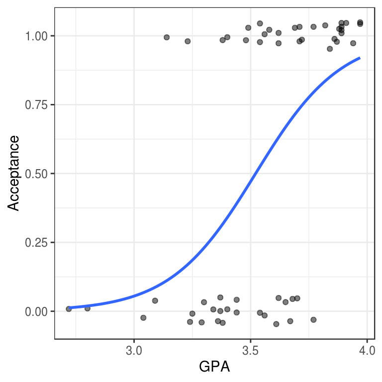
5.5 Using bins
One of the difficulties in working with a binary response variable is understanding how it “changes.” The response itself (\(y\)) is either 0 or 1, while the fitted values (\(\hat{y}\))—which are interpreted as probabilities—are between 0 and 1. But if every medical school applicant is either admitted or not, what does it mean to talk about the probability of being accepted?
What we’d like is a larger sample of students, so that for each GPA value (e.g. 3.54) we had many observations (say \(n\)), and we could then take the average of those \(n\) observations to arrive at the estimated probability of acceptance. Unfortunately, since the explanatory variable is continuous, this is hopeless—it would take an infinite amount of data to make these estimates robust.
Instead, what we can do is put the observations into bins based on their GPA value. Within each bin, we can compute the proportion of accepted students, and we can visualize our model as a smooth logistic curve through those binned values.
We have created a data.frame called MedGPA_binned that aggregates the original data into separate bins for each 1/6 of GPA. It also contains the fitted values from the logistic regression model.
gpa_bins <- quantile(MedGPA$GPA, probs = seq(0, 1, 1/6))
gpa_bins 0% 16.66667% 33.33333% 50% 66.66667% 83.33333% 100%
2.72 3.30 3.44 3.58 3.70 3.87 3.97 MedGPA$bins <- cut(MedGPA$GPA, breaks = gpa_bins, include.lowest = TRUE)
head(MedGPA) Accept Acceptance Sex BCPM GPA VR PS WS BS MCAT Apps bins
1 D 0 F 3.59 3.62 11 9 9 9 38 5 (3.58,3.7]
2 A 1 M 3.75 3.84 12 13 8 12 45 3 (3.7,3.87]
3 A 1 F 3.24 3.23 9 10 5 9 33 19 [2.72,3.3]
4 A 1 F 3.74 3.69 12 11 7 10 40 5 (3.58,3.7]
5 A 1 F 3.53 3.38 9 11 4 11 35 11 (3.3,3.44]
6 A 1 M 3.59 3.72 10 9 7 10 36 5 (3.7,3.87]MedGPA_binned <- MedGPA %>%
group_by(bins) %>%
summarize(mean_GPA = mean(GPA), acceptance_rate = mean(Acceptance))
MedGPA_binned# A tibble: 6 x 3
bins mean_GPA acceptance_rate
<fct> <dbl> <dbl>
1 [2.72,3.3] 3.11 0.2
2 (3.3,3.44] 3.39 0.2
3 (3.44,3.58] 3.54 0.75
4 (3.58,3.7] 3.65 0.333
5 (3.7,3.87] 3.79 0.889
6 (3.87,3.97] 3.91 1 Here we are plotting \(y\) as a function of \(x\), where that function is
\[\begin{equation} \hat{p}(X) = \widehat{\text{Pr}}(Y=1|X) = \frac{\exp(\hat{\beta}_0 + \hat{\beta}_1 x)}{1 + \exp(\hat{\beta}_0 + \hat{\beta}_1 x)} \end{equation}\]Note that the left hand side is the expected probability \(y\) of being accepted to medical school.
Exercise
- Create a scatterplot called
data_spaceforacceptance_rateas a function ofmean_GPAusing the binned data inMedGPA_binned. Usegeom_line()to connect the points.
# binned points and line
data_space <- ggplot(data = MedGPA_binned, aes(x = mean_GPA, y = acceptance_rate)) +
geom_point() +
geom_line() +
theme_bw()
data_space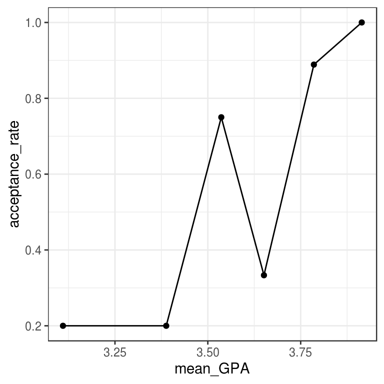
- Augment the model
mod. Create predictions on the scale of the response variable by using thetype.predictargument.
# augmented model
MedGPA_plus <- mod %>%
augment(type.predict = "response")- Use
geom_line()to illustrate the model through the fitted values.
# logistic model on probability scale
data_space +
geom_line(data = MedGPA_plus, aes(x = GPA, y = .fitted), color = "red")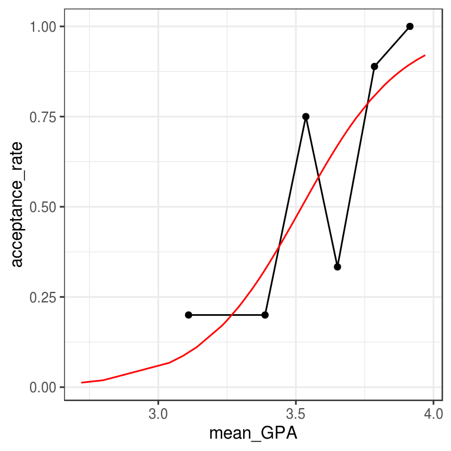
The logistic predictions seem to follow the binned values pretty well.
5.6 Odds scale
For most people, the idea that we could estimate the probability of being admitted to medical school based on undergraduate GPA is fairly intuitive. However, thinking about how the probability changes as a function of GPA is complicated by the non-linear logistic curve. By translating the response from the probability scale to the odds scale, we make the right hand side of our equation easier to understand.
If the probability of getting accepted is \(y\), then the odds are \(y/(1-y)\). Expressions of probabilities in terms of odds are common in many situations, perhaps most notably gambling.
Here we are plotting \(y\)/(\(1-y\))as a function of \(x\), where that function is
\[\begin{equation} \text{odds}(\hat{y})=\frac{\hat{y}}{1 - \hat{y}}=\exp(\hat{\beta}_0 + \hat{\beta}_1 \cdot x) \end{equation}\]Note that the left hand side is the expected odds of being accepted to medical school. The right hand side is now a familiar exponential function of \(x\).
The MedGPA_binned data frame contains the data for each GPA bin, while the MedGPA_plus data frame records the original observations after being augment()-ed by mod.
Exercise
- Add a variable called
oddstoMedGPA_binnedthat records the odds of being accepted to medical school for each bin.
# compute odds for bins
MedGPA_binned <- MedGPA_binned %>%
mutate(odds = acceptance_rate / (1 - acceptance_rate))- Create a scatterplot called
data_spaceforoddsas a function ofmean_GPAusing the binned data inMedGPA_binned. Connect the points withgeom_line().
# plot binned odds
data_space <- ggplot(data = MedGPA_binned,
aes(x = mean_GPA, y = odds)) +
geom_point() +
geom_line() +
theme_bw()
data_space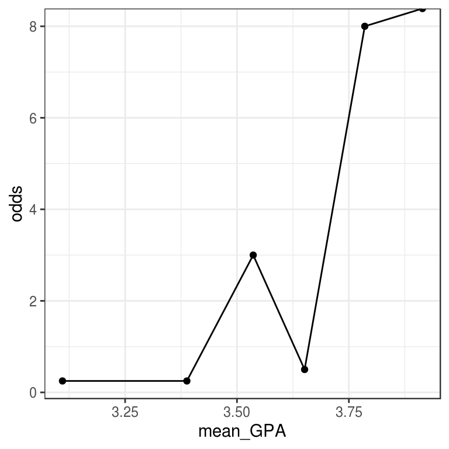
- Add a variable called
odds_hattoMedGPA_plusthat records the predicted odds of being accepted for each observation.
# compute odds for observations
MedGPA_plus <- MedGPA_plus %>%
mutate(odds_hat = .fitted / (1 - .fitted))- Use
geom_line()to illustrate the model through the fitted values. Note that you should be plotting the \(\hat{odds}\)’s.
# logistic model on odds scale
data_space +
geom_line(data = MedGPA_plus, aes(x = GPA, y = odds_hat), color = "red")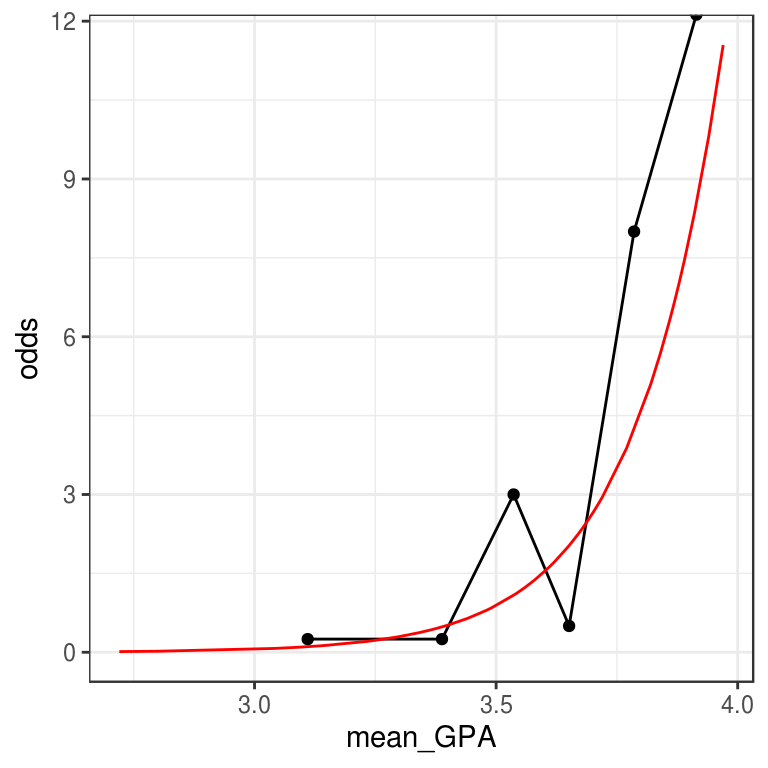
5.7 Log-odds scale
Previously, we considered two formulations of logistic regression models:
on the probability scale, the units are easy to interpret, but the function is non-linear, which makes it hard to understand
on the odds scale, the units are harder (but not impossible) to interpret, and the function is exponential, which makes it harder (but not impossible) to interpret
We’ll now add a third formulation:
- on the log-odds scale, the units are nearly impossible to interpret, but the function is linear, which makes it easy to understand As you can see, none of these three is uniformly superior. Most people tend to interpret the fitted values on the probability scale and the function on the log-odds scale. The interpretation of the coefficients is most commonly done on the odds scale. Recall that we interpreted our slope coefficient \(\beta_1\) in linear regression as the expected change in \(y\) given a one unit change in \(x\). On the probability scale, the function is non-linear and so this approach won’t work. On the log-odds, the function is linear, but the units are not interpretable (what does the log of the odds mean??). However, on the odds scale, a one unit change in \(x\) leads to the odds being multiplied by a factor of \(\hat{\beta_1}\). To see why, we form the odds ratio:
Thus, the exponentiated coefficient \(\beta_1\) tells us how the expected odds change for a one unit increase in the explanatory variable. It is tempting to interpret this as a change in the expected probability, but this is wrong and can lead to nonsensical predictions (e.g. expected probabilities greater than 1).
Exercise
- Add a variable called
log_oddstoMedGPA_binnedthat records the odds of being accepted for each bin. Recall that \(odds(p) = p/(1-p)\).
# compute log odds for bins
MedGPA_binned <- MedGPA_binned %>%
mutate(log_odds = log(acceptance_rate / (1 - acceptance_rate)))- Create a scatterplot called
data_spaceforlog_oddsas a function ofmean_GPAusing the binned data inMedGPA_binned. Usegeom_lineto connect the points.
# plot binned log odds
data_space <- ggplot(data = MedGPA_binned,
aes(y = log_odds, x = mean_GPA)) +
geom_point() +
geom_line() +
theme_bw()
data_space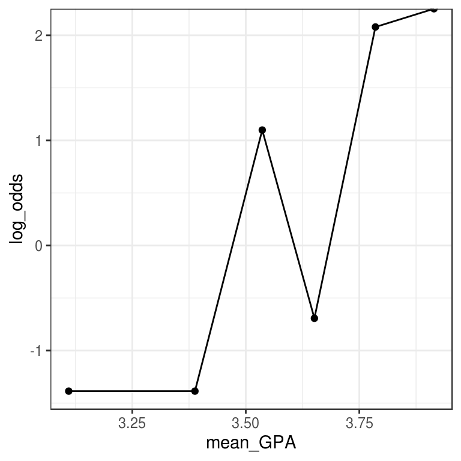
- Add a variable called
log_odds_hattoMedGPA_plusthat records the predicted odds of being accepted for each observation.
# compute log odds for observations
MedGPA_plus <- MedGPA_plus %>%
mutate(log_odds_hat = log(.fitted / (1 - .fitted)))- Use
geom_line()to illustrate the model through the fitted values. Note that you should be plotting the \(\widehat{\text{odds}}\)’s.
# logistic model on log odds scale
data_space +
geom_line(data = MedGPA_plus, aes(x = GPA, y = log_odds_hat), color = "red")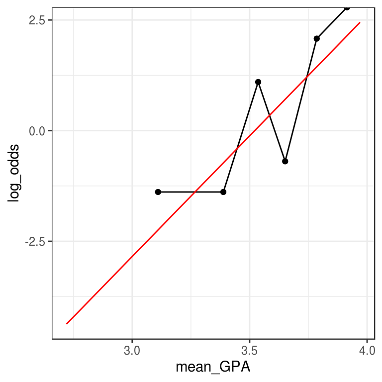
When you’re on the log-odds scale, your model is a simple linear function.
Interpretation of logistic regression
The fitted coefficient \(\hat\beta_1\) from the medical school logistic regression model is 5.45. The exponential of this is 233.73.
Donald’s GPA is 2.9, and thus the model predicts that the probability of him getting into medical school is 3.26%. The odds of Donald getting into medical school are 0.0337, or—phrased in gambling terms—29.6:1. If Donald hacks the school’s registrar and changes his GPA to 3.9, then which of the following statements is FALSE:
His expected odds of getting into medical school improve to 7.8833 (or about 9:8).
His expected probability of getting into medical school improves to 88.7%.
His expected log-odds of getting into medical school improve by 5.45.
His expected probability of getting into medical school improves to 7.9%. This is a FALSE statement.
5.8 Making probabilistic predictions
Just as we did with linear regression, we can use our logistic regression model to make predictions about new observations. In this exercise, we will use the newdata argument to the augment() function from the broom package to make predictions about students who were not in our original data set. These predictions are sometimes called out-of-sample.
Following our previous discussion about scales, with logistic regression it is important that we specify on which scale we want the predicted values. Although the default is link – which uses the log-odds scale – we want our predictions on the probability scale, which is the scale of the response variable. The type.predict argument to augment() controls this behavior.
Exercise
- Create a new data frame which has one variable called
GPAand one row, with the value 3.51.
# create new data frame
new_data <- data.frame(GPA = 3.51)- Use
augment()to find the expected probability of admission to medical school for a student with a GPA of 3.51.
# make predictions
augment(mod, newdata = new_data, type.predict = "response")# A tibble: 1 x 3
GPA .fitted .se.fit
<dbl> <dbl> <dbl>
1 3.51 0.484 0.0834By framing your prediction as a probability you can show how likely it is that this student will get admitted to medical school.
5.9 Making binary predictions
Naturally, we want to know how well our model works. Did it predict acceptance for the students who were actually accepted to medical school? Did it predict rejections for the student who were not admitted? These types of predictions are called in-sample. One common way to evaluate models with a binary response is with a confusion matrix. [Yes, that is actually what it is called!]
However, note that while our response variable is binary, our fitted values are probabilities. Thus, we have to round them somehow into binary predictions. While the probabilities convey more information, we might ultimately have to make a decision, and so this rounding is common in practice. There are many different ways to round, but for simplicity we will predict admission if the fitted probability is greater than 0.5, and rejection otherwise.
First, we’ll use augment() to make the predictions, and then mutate() and round() to convert these probabilities into binary decisions. Then we will form the confusion matrix using the table() function. table() will compute a 2-way table when given a data frame with two categorical variables, so we will first use select() to grab only those variables.
You will find that this model made only 15 mistakes on these 55 observations, so it is nearly 73% accurate.
Exercise
The model object mod is already in your workspace.
- Create a data frame with the actual observations, and their fitted probabilities, and add a new column with the binary decision by rounding the fitted probabilities.
# data frame with binary predictions
tidy_mod <- augment(mod, type.predict = "response") %>%
mutate(Acceptance_hat = round(.fitted)) - Compute the confusion matrix between the actual and predicted acceptance.
# confusion matrix
tidy_mod %>%
select(Acceptance, Acceptance_hat) %>%
table() Acceptance_hat
Acceptance 0 1
0 16 9
1 6 24